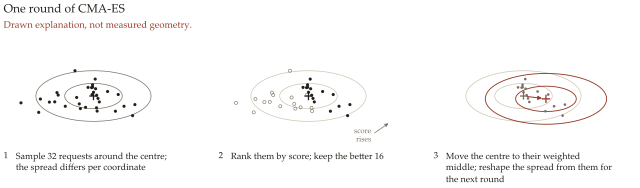

Related work
Our question rests on 3 things others have worked on: measuring what is new against a past, reading how art moved in an image encoder, and searching with a heuristic but no goal. Our search does the last with a method called CMA-ES.
What is new, and can it be measured?
A work is new only to an observer and against a past (Introduction), so what counts as novel depends on time and context (Stanley and Lehman 2015). How do new things arise? One old answer is that variations are made without knowing which will succeed, and some of them are selected and kept (Campbell 1960).
Novelty has been scored against a past, for e.g., a song by how unlike it sounds from the past year’s chart songs (Askin and Mauskapf 2017), and a paper by how improbable its mix of keywords is under a model of earlier years (Shi and Evans 2023).1 Papers written after a language model’s cutoff have been scored against its training data too (Zhang and Evans 2025). Whether such a score means anything is checked by what came later, like a paper’s citations (Uzzi et al. 2013).23
So we do the same for art, with the past stopped at 1900 and the works after it as a future we already know. To score a painting against that past, we need a space where distance means something.
Can a foundation model’s encoder measure what is new?
We take that space from a foundation model, i.e., one trained on broad data that can be adapted to many tasks (Bommasani et al. 2021). CLIP is one, trained to match images with their captions (Radford et al. 2021). Why trust its distances? Encoder distances agree with people on how alike two small photo patches look (Zhang et al. 2018). On paintings, CLIP has been compared with people only on how well a picture matches a text, not on distance. There it agrees with people in part, and it weighs what is depicted over style (Asperti et al. 2025).4 So for the distance between two paintings we assume what the test above found on photo patches.
Do encoders see art move in time? Networks trained on painting styles order WikiArt’s paintings in time, with no dates given (Elgammal et al. 2018). A painting’s date can also be read well from its CLIP vector (Kim et al. 2026).5 But a smooth trend in a curated art corpus can come from the curators’ selection (Lee et al. 2020), and a corpus read through a model is also read through the model’s training data (Impett and Offert 2022).6
A painting’s originality has been scored by its distance from its most similar earlier paintings (Elgammal and Saleh 2015; Efthymiou et al. 2026). Does that distance go with an artist’s later standing? An artist’s peak originality goes with a later place in the canon (Efthymiou et al. 2026). Among leading pioneers of abstraction, though, a mean distance from nineteenth-century representational works was not significantly related to fame (Banerjee and Ingram 2018).7 We use the same kind of distance for another question: do the works made after 1900 sit far from the works before 1900? For each later work we find its 15 nearest works before 1900 in CLIP and take the mean of those distances, its score.8 Each work before 1900 is scored the same way, against the other works before 1900. The bar is the score that 99% of them lie below. About 5% of the works from 1900 to 1959 are over the bar, and about 26% of those from 1960 on, so the score does pick out later work, and more of it the later it is (Q6).
Paintings’ CLIP vectors also have a leading direction read as a move toward abstract art, and paintings rise along it from the late 1800s and level off from 1970 (Kim et al. 2026).9 The works before 1900 have a basis, i.e., their average and 32 leading directions. The later works’ leftover (what the basis leaves of them) piles up along one direction in CLIP, each decade further along that direction until the 1960s, then holding (Q3). So both directions rise and then level off in CLIP, theirs from 1970 and ours from the 1960s.
Why search for new pictures, and why through a decoder?
Every score so far is of a work that exists. To ask where a culture has not been, our search paints pictures that do not exist and scores them. With no goal, there is no remaining cost to estimate as A* does (Hart et al. 1968), so our search follows distance from what it has met, as novelty search does (Lehman and Stanley 2011) (figure).10
Novelty has been scored in a foundation model’s image space before, in a search for artificial-life simulations (Kumar et al. 2025). One of its searches scores each simulation by its distance from the nearest other one found, and known forms such as flocking were found again.11 Ours measures distance from the works before 1900 and from what it has kept, in 2 other encoders (DINOv3 and SigLIP).
Novelty alone can go anywhere. In a thought experiment, an agent rewarded for what it cannot predict is held by a TV showing noise, the noisy TV (Burda et al. 2019). TV snow has higher entropy, i.e., more bits, than a natural scene, yet once an observer expects snow it brings little Bayesian surprise (Itti and Baldi 2009). Of 160 noise and plain images, read as they are, 159 are far from the works before 1900 (the Methods overview), so a search over pixels would be rewarded for noise. That is why we search through a decoder (a pretrained image generator that paints every vector we visit). Edits made through a trained generator have stayed among the images it can make (Zhu et al. 2016).12 Ours does not keep the search among pictures in that way, as it also paints a picture for any request (i.e., any vector we ask it to paint), including requests read from noise (Q11).
Wide variation is worth little without a sharp test of what to keep (Campbell 1960). For novelty search such a test was proposed as a minimal criterion, and a candidate that fails it gets zero novelty (Lehman and Stanley 2010).13 A search that only follows distance goes far, but little of what it brings back is faithful (i.e., comes back near what we asked for), and none of it is far and faithful. In DuROOM search, a picture that is not faithful cannot be kept (Q10). Kept to faithful pictures, a search still goes far: DuROOM search and its 2 controls each paint over 1,000 far ones (Q12).
How does CMA-ES search?
Novelty only ranks the pictures a search has tried, and it does not say where to try next. The classical searches of the Introduction, A* among them, move between states they can list. Ours moves among CLIP vectors, 768 numbers each, and at any vector the search can only paint that vector and score the picture. The search sees no slope of the score, only its value at the points it tries. This is black-box search. CMA-ES (the covariance matrix adaptation evolution strategy) is a randomized method for black-box search over continuous numbers (Hansen 2016), and it is the one we chose.
The method keeps a centre and a spread around it, i.e., a normal distribution, and each round samples a batch of points from it (Figure 1). In our search each point is a request, and its score is read in 2 other encoders on the picture the decoder paints (Q10). The method ranks the points by score, moves the centre toward the better half, and reshapes and resizes the spread from the steps those points took (Hansen et al. 2003; Hansen 2016).14 It uses only the order of the scores, so any change to the score that keeps the order leaves the search the same.

The drawing is a still; the method can be watched in motion on test functions in A Visual Guide to Evolution Strategies (Ha 2017).
Our search uses the method’s diagonal form, one spread per coordinate, which can stretch along each of the 768 axes but cannot tilt between them (Ros and Hansen 2008; Hansen 2016). Each round it draws 32 requests, ranks them and takes the better half, 16 of the 32.15 Q10 gives the loop step by step and says where DuROOM search departs from the method. Before that, Encoders and corpus describes the corpus and the 3 encoders all of this rests on.
References
Footnotes
A song’s typicality is its mean cosine similarity to every Hot 100 song of the previous 52 weeks, weighted by genre. The similarity uses 11 fixed Echo Nest features, and the data are 25,077 songs from 1958 to 2016 (Askin and Mauskapf 2017). A paper’s surprisal is how improbable its combination of keywords (content) or cited journals (context) is under a hypergraph model fitted on prior years (Shi and Evans 2023). A speech’s novelty is the mean KL divergence of its topic mixture (100 topics) from each of the speeches just before it, over 44,913 speeches from 1789 to 1791 (Barron et al. 2018).↩︎
A highly cited paper is one in the top 5% of citations within 8 years. The papers with the most impact rest on extremely conventional combinations with a few unusual ones mixed in: 9.11 highly cited papers per 100, against a background of 5 (Uzzi et al. 2013). The most surprising papers are about 5 times more likely to be highly cited (Shi and Evans 2023). A speech’s transience is how far its patterns fade in the speeches after it. Its resonance is its novelty minus its transience (Barron et al. 2018). Papers written after the model’s cutoff were not in what it had seen, and this scoring depends in an essential way on keeping the training data and the evaluation data strictly apart in time (Zhang and Evans 2025, a preprint).↩︎
Highly novel papers have 57% higher odds of being among the top 1% most cited, and their spread comes from both tails (Wang et al. 2017). The most perplexing papers are over-represented in both the top and the bottom 5% of journals by impact factor. Their outcomes have two modes, and surprise by itself is not enough to predict success (Zhang and Evans 2025). The most atypical songs in the data would gain from being more typical (Askin and Mauskapf 2017). That trade-off was set out before the test: a product cannot stand out so far that it is no longer recognized (Askin and Mauskapf 2017).↩︎
On generated paintings, CLIP’s score of how well a picture matches its prompt correlates 0.43 with people’s average rating, where people agree with each other at about 0.70 (p. 6, Table V).↩︎
Angular coordinates of a fine-tuned AlexNet+2 correlate with time at a Pearson coefficient of 0.69 (Elgammal et al. 2018). On held-out paintings, a painting’s year is read from its CLIP image vector with an R² of 0.869, against 0.202 from autoencoder latents (Kim et al. 2026).↩︎
WikiArt’s works are chosen more arbitrarily, by what is in the public domain, and lean heavily toward twentieth-century and post-war art (Elgammal et al. 2018). Of its dated works in a 2016 crawl, over half were painted after 1912 (Sigaki et al. 2018). Ratios of composition in landscape paintings, a measure with no encoder, changed smoothly enough to be suspect. This may come from art history or, more likely, be an artifact of the curators’ selection bias (Lee et al. 2020). No date limit is stated for the images our encoders were trained on (Encoders and corpus), and we have not checked their dates. So we cannot claim the strict separation in time that the language-model study calls essential (Zhang and Evans 2025) (Introduction).↩︎
In one measure, originality is low similarity to the K = 500 most similar earlier paintings in a visual feature space, combined with influence on later works in one score. That measure carries a warning, taken from Kant, that “there can also be original nonsense” (Elgammal and Saleh 2015). In the canon measure, originality is the distance to the single nearest earlier painting by another artist, in fine-tuned ResNet-152 features (Efthymiou et al. 2026). The predictor there is the artist’s peak-year maximum, which alone explains 4 to 9% of the variance in rankings. The result is an association with no causal claim (Efthymiou et al. 2026), on a sample of the top tier of artworks (Efthymiou et al. 2026). The fixed reference for fame is 2,000 nineteenth-century representational works, by mean cosine distance in ImageNet-CNN features (Banerjee and Ingram 2018, a working paper). Among 90 pioneers, network brokerage predicted later fame. In no model was creativity significantly related to fame: for the distance score the coefficient is 10.816 (SE 11.552). This null holds only for the foremost pioneers of a new paradigm (Banerjee and Ingram 2018).↩︎
The distances are taken in CLIP on the works’ own vectors and not on repainted pictures. Each work’s artist is left out of its neighbours. So this is the same kind of test as the search’s, and not the same test. We average over 15 neighbours, where the canon measure takes one (Efthymiou et al. 2026) and the fixed reference all 2,000 (Banerjee and Ingram 2018).↩︎
The 2 leading directions explain only 0.063 and 0.050 of the variance, and the first is read as art’s historical move toward abstraction (Kim et al. 2026). We have not tested whether that first direction is the direction of Q3. Some artworks may have been in CLIP’s training data. A CLIP trained only on synthetic images still orders paintings by year, but less well (correlation 0.712 against 0.932), which is read there as more than memorization (Kim et al. 2026).↩︎
A* ranks a state by its cost so far plus the estimate of the cost still to go (Hart et al. 1968). In novelty search a candidate’s novelty is its mean distance to its 15 nearest among the population and an archive of the search’s own earlier novel candidates (Lehman and Stanley 2011). Our distance takes the same form and number (Q7). Novelty is meant to find the stepping stones, the intermediate steps an objective does not reward (Lehman and Stanley 2011). On a deceptive maze novelty search solved 39 of 40 runs, search for the objective 3 and random selection 4 (Lehman and Stanley 2011). It is not claimed there that novelty search is better than search for an objective (Lehman and Stanley 2011).↩︎
That search scored distance in CLIP or DINOv2, with CLIP seeming slightly better and both qualitatively better than pixels. Its search toward a target prompt used the diagonal form of CMA-ES, the form our search uses (Kumar et al. 2025). No section on limits is given. One kind of simulation was left out of one of the searches, as it was suspected of being overly expressive (Kumar et al. 2025).↩︎
A generator is no guarantee. Quality-diversity searches over a GAN’s latent space, for images that CLIP scores high, were seen to leave the GAN’s training distribution and return low-quality images. This was seen, not measured (Fontaine and Nikolaidis 2023).↩︎
The test of the minimal criterion is on two mazes and is called preliminary, and a criterion that is too strict may waste most evaluations (Lehman and Stanley 2010). Our search differs: a picture that is not faithful is not given zero novelty. It is told a value about the middle of the faithful ones, a little on the worse side, and it cannot be kept or move the centre (Q10).↩︎
For a reader from machine learning: learning the spread is analogous to learning the inverse Hessian in a quasi-Newton method. On a bowl-shaped (convex quadratic) score, learning the spread in effect turns the bowl into a round one; a rigorous proof of this is missing (Hansen 2016). The steps above are in the tutorial (Hansen 2016): sampling and moving the centre (pp. 8 to 9), reshaping the spread (pp. 10 to 18), the spread’s overall size (pp. 19 to 22), the use of the ranking alone (p. 24), and the default of half the population as parents (p. 31). Reshaping the spread from all the better points of a round was later proposed (Hansen et al. 2003).↩︎
This is the diagonal CMA-ES of the pycma library, with 32 requests a round for 60 rounds, no early stop, and the library’s default number of parents, half the population, with its decreasing weights. Holding the spread to its diagonal was later proposed for spaces of many dimensions. Each coordinate is then sampled on its own. The spread has 768 free numbers here, not about 295,000, and it can be learned faster, at the cost of no longer turning with the space (Ros and Hansen 2008). The diagonal form is our choice. Each request is scaled to unit length, so the search moves on the sphere of CLIP vectors, and the decoder paints it at one fixed length, 17.53, the corpus’s median (Q10). The 60 rounds and the 32 requests a round are both our choice, and we have not varied either. The library’s own default for 768 coordinates is 23 requests.↩︎